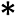

|
|
Cellular Automata Laboratory |
|
Almost all the programs in CelLab are two-dimensional eight-neighbor rules. That is, each cell is thought of as being the center of a 3×3 neighborhood of nine cells: one central cell and eight neighbors. Diagonal neighbors count.
Back when my wife and I were having our children, we lived in a small town called Geneseo, New York. Geneseo had the structure of a nine-cell CA neighborhood. That is, the town consisted of nine blocks: three blocks in either direction, said blocks delimited by four streets running north-south and four streets running east-west. The richest people lived in the central block, the poorest people lived in the northwestern block, and our little family lived in the southwestern block. Diagonal neighbors count in cellular automata, so if the Geneseo of 1976 had been a cellular automaton, it would have been correct to say that we were neighbors of the rich people, but not of the poor people. In practice Geneseo and the surrounding countryside was usually covered with snow. Many days I would leave the CA neighborhood of family and job to go cross-country skiing through the unspoiled miles of powder. I never skied for the fitness or the exercise of it, mind you, I skied as a way to get out in the woods to marvel at the sunlight or at the falling snow.
Those were good times, the best, but these are good times too. I'm glad to be writing this manual for this software. In my book Mind Tools, I say that mathematicians view the world five ways: as Number, as Space, as Logic, as Infinity, and as Information. Skiing in Geneseo, thinking about relativity, I thought the world was Space. Before Geneseo, in graduate school at Rutgers, I'd thought the world was Logic. After Geneseo, in Heidelberg, studying Georg Cantor's writings on theology and set theory, I thought Infinity was where it's at. And then towards the end in Lynchburg, when I was writing Mind Tools so I could move to Silicon Valley, I put my head into Information. I never did Number—Number always seemed too brutally empirical. But now it occurs to me that CAs have a strong number component. The first rules we will look at actually are ten-bit numbers.
Vote is an example of the simplest possible kind of eight-neighbor CA. Vote is so simple because (1) Vote is a “one-bit rule” and, (2) Vote is “totalistic.” What do these expressions mean?
How many different eight-neighbor 1-bit totalistic rules are there? A rule like this is completely specified by a ten-entry lookup table which gives the new cell value for each of the ten possible neighborhood NineSums. Each of the entries has to be 0 or 1, so filling in such a lookup table involves making ten consecutive binary decisions, which can be done in 210 different ways. 210 is 1024, a number which occurs so often around computers that we call it “one K” for short. So there are a shade more than a thousand different eight-neighbor 1-bit totalistic rules, although some of them may in fact look and act the same as others. You can create any of these rules by entering its code, between 0 and 1023, into the “One-bit totalistic” section of the Algorithmic Rule Specification dialogue in WebCA.
Why is Vote my favorite of all totalistic rules? Two reasons: Vote has a “real world” look to it, and the rule behind Vote is based on a philosophically interesting idea. To get a good big picture of Vote in action, launch WebCA and load Vote. Let it run for a bit, then press “Random” to randomize and let it run some more. Do this a few more times. What you will observe is that Vote spontaneously aggregates a random sea of cells into large shifting shapes of the kind that the Surrealist artist Max Ernst called lop-lops. The lop-lops start out with fairly convoluted edges, but as time goes on, the edges get smoother and smoother.
If you let Vote run long enough, one of two things happens: i) The screen gets eaten by one color, save for a few little oscillators here and there; or ii) The screen stabilizes with a vertical or a horizontal stripe, and with a periodic oscillation taking place along the stripe's edge. The basic thing Vote does is to shrink isolated areas. Regions of sharp curvature are rounded off. Gérard Vichniac, the inventor of Vote, compares Vote's dynamics to surface tension and to the process of annealing metal.
Vote's oscillators may look like annoying “turd bits,” but in fact they have an interesting structure of their own. These small patterns can arise in two flavors: black on white and white on black. Two fairly common ones are twizzler and robotman. (Giving colorful names to CA rules and patterns is a hacker tradition.)
Magnification of a landscape generated from a random start by the Vote rule. A twizzler and robotman inhabit the bay at the top left, and an anti-twizzler is on the land at the center left.
I still haven't told you what the rule for Vote is. Recall that Vote is totalistic, meaning that each time a cell is updated, the NineSum of the cell and its eight neighbors is formed. The idea behind Vote's rule is that if most cells in your neighborhood are 1, then you go to 1, and if most cells in your neighborhood are 0, then you go to 0. What do I mean by “most cells in your neighborhood?” Since there are nine cells in your neighborhood, the most obvious interpretation is to assume that “most” means “five or more”. Here is the lookup table for this simple majority rule. (The meaning of “Totalistic Code” will be explained below.)
| Majority: Totalistic Code 1111100000b = 992d | ||||||||||
|---|---|---|---|---|---|---|---|---|---|---|
| NineSum | 0 | 1 | 2 | 3 | 4 | 5 | 6 | 7 | 8 | 9 |
| NewState | 0 | 0 | 0 | 0 | 0 | 1 | 1 | 1 | 1 | 1 |
You can run this rule by entering its code, 992, in the “One-bit totalistic” section of the Algorithmic Rule Specification dialogue. Run it on a random start screen a few times. What do you see? You see a pattern that evolves through a few dozen steps and then freezes up at some rigidly gerrymandered division of black and red.
In creating Vote, Vichniac had the idea of allowing more change at the boundaries between zeroes and ones. What if whenever a candidate loses an election very narrowly, he or she is put into office and, conversely, someone who achieves only a slight majority of votes is sent back home! Would this be a politically good thing? It might be. One effect would be that movements on the verge of taking power would get control sooner. But then when the growing movement inched into slim majority, it would suddenly lose power. The effect would be that in certain areas one would have ever-changing coalitions striving to reach a stable 60% majority. Under the Vote rule, Nixon would have been made president instead of Kennedy, which is probably not the most thrilling of prospects, though it's fun to imagine what would have happened next. Would Oswald have bothered to shoot Nixon? If he had, would sympathy for the Republicans have boosted their vote share up to a power-losing 55%, thus letting Kennedy win his second election bid? In any case, the idea behind Vote is most succinctly expressed by a lookup table.
| Vote: Totalistic Code 1111010000b = 976d | ||||||||||
|---|---|---|---|---|---|---|---|---|---|---|
| NineSum | 0 | 1 | 2 | 3 | 4 | 5 | 6 | 7 | 8 | 9 |
| NewState | 0 | 0 | 0 | 0 | 1 | 0 | 1 | 1 | 1 | 1 |
Here is an interesting variation on Vote. What if, instead of simply reversing the majority decision for “close election” values of 4 and 5 and always defying the majority, we just did it sometimes? If we have access to a source of random bits R, we can have a randomized election rule, VoteRan.
| VoteRan | ||||||||||
|---|---|---|---|---|---|---|---|---|---|---|
| NineSum | 0 | 1 | 2 | 3 | 4 | 5 | 6 | 7 | 8 | 9 |
| NewState | 0 | 0 | 0 | 0 | R | 1 − R | 1 | 1 | 1 | 1 |
You might try writing a rule program for VoteRan. In action, VoteRan looks a lot like Vote, but it does not have any stable oscillators. The reason is that the randomness will wreck any of the neat little twizzler type coalitions that Vote allows. Where do the random bits R come from? In WebCA, we use an external algorithm to generate pseudorandom bits. By using several planes of randomness we can get different distributions of Rs. If very few of the Rs are 1, then VoteRan will act almost like Majority. If we set the density so that more of the Rs are 1, then VoteRan acts more like Vote.
Note however that as it uses external randomness, VoteRan is not a pure CA. It is in fact possible to run a kind of CA rule in the background to generate random bits; this is what Toffoli and Margolus generally do.
Let's get back to pure CAs, totalistic one-bit CAs like Vote. The sequence of ten binary bits making up the lookup tables for Majority and Vote can be thought of as a single ten-digit number. Rather than putting the #0 entry in the leftmost position, it is customary to put the #9 digit leftmost. Thus the rule for Majority can be thought of as the binary number 1111100000, and the rule for Vote is 1111010000. In the more compact decimal form, these numbers are 992 and 976 respectively. Try running them from the Algorithmic Rule Specification dialogue.
Try looking at totalistic rule 936. Why do I mention 936? 936d = 1110101000b, which means that this rule is like Vote except that it reverses the outcome of election values 3 and 6 (instead of reversing the outcome of election values 4 and 5). If you run it you'll see a fuzzy, messy Vote.
Before we move on to more general sorts of rules, we need to talk about the most famous totalistic rule of all: the Parity rule of Edward Fredkin.
| Fredkin: Totalistic Code 1010101010b = 682d | ||||||||||
|---|---|---|---|---|---|---|---|---|---|---|
| NineSum | 0 | 1 | 2 | 3 | 4 | 5 | 6 | 7 | 8 | 9 |
| NewState | 0 | 1 | 0 | 1 | 0 | 1 | 0 | 1 | 0 | 1 |
The way Fredkin's rule works is to form the 9-sum of all your neighbors and then to make your new value 0 if the 9-sum is even, and 1 if the 9-sum is odd. Fredkin is one of the rare rules that can be described by a compact formula instead of by an explicit lookup table. To understand the formula, you need to know that ⊕ (XOR: exclusive or) is a logical operation such that if A and B are binary bits, then A ⊕ B is 0 if A = B and A ⊕ B is 1 if A differs from B. Another way of looking at it is to say that if B is 0, then A ⊕ B is just A, and if B is 1, then A ⊕ B is the opposite of A.
Fredkin Formula
NewState = C ⊕ NW ⊕ N ⊕ NE ⊕ E ⊕ W ⊕ SW ⊕ S ⊕ SE.
If you run the Parity rule from a random startscreen, nothing interesting will happen. But if you start Parity from a dot, block, or any other simple pattern, the workings of the rule will in time produce nine copies of the original seed! There is a sense in which a CA world running Parity has automatic self-reproduction, for any pattern you put down in this world gets copied ninefold.
The fact that Fredkin's Parity rule is defined by a simple formula makes it easy to generalize it to other dimensions.
These one-bit totalistic rules look nicer if you equip each cell with an additional bit of memory. Each time we compute a cell's new state, we take its old state (zero or one) and store this bit to the left in the “echo” bit. Thus each cell can have one of four possible two-bit states:
| State Number | State Bits | Interpretation |
|---|---|---|
| (Decimal) | (Binary) | |
| 0 | 00 | Was Off & Is Off |
| 1 | 01 | Was Off & Is On |
| 2 | 10 | Was On & Is Off |
| 3 | 11 | Was On & Is On |
The version of Vote in WebCA is actually VoteMem. In general, you can get WebCA to show the “history” version of a totalistic rule with the code number n by entering its number in the “One-bit totalistic” box and checking “History” to its right.
You might try making a copy of vote.js and editing it to get a rule which remembers the last 7 values of each cell. The “inland” cells in the middle of the “on” regions stabilize at the color 11111111b=256d (which happens to be red in the default palette). The “at sea” cells in the middle of the “off” regions stabilize at the color 00000000b (black). But the border cells range through a spectrum of 256 possible colors that depend on how the elections have been running in their neighborhood.
Why don't the high “color” bits interfere with the running of the underlying Vote rule? Because the program only checks the lowest bit of each cell's neighbor. Most of the rules we use have this property: each cell sees only the lowest bit of its neighbors' states. The main reason we wrote these rules this way was to make them run faster. (Some of the rules which look at more of their neighbors' state bits are Rug, Langton, Hodge, and Heat.)
Even more striking than a full seven-bit VoteMem is the VoteDNA rule.
Fredkin's Parity also looks more colorful with memory. Try FredMem. This rule has seven bits of memory. Note that FredMem will not self-organize anything from randomness as does Vote; FredMem needs to be started from a small block or from a simple pattern like Square.
The most famous CA rule is the one-bit “semitotalistic” rule called the Game of Life. Recall that in a totalistic rule, your new state depends solely on the NineSum of your own state and of the states of your eight nearest neighbors. In semitotalistic rules, your new state depends on a) the EightSum of your eight nearest neighbors and on b) your present state. Rather than simply being anonymously added in with the full NineSum, your personal state bit is looked at separately. The rule for Life is normally specified as follows:
If we think of this as a semitotalistic rule, we can express it in a table similar to the totalistic tables above. Note however, that where a totalistic table is one-dimensional, a semitotalistic table is two-dimensional. In each case, the column you look at depends on your neighborhood sum (NineSum for totalistic and EightSum for semitotalistic).
In the case of a semitotalistic table you also need to decide which row to look at, and this is determined by your present state.
Semitotalistic Life Table
| EightSum | |||||||||
|---|---|---|---|---|---|---|---|---|---|
| CellState | 0 | 1 | 2 | 3 | 4 | 5 | 6 | 7 | 8 |
| 0 | 0 | 0 | 0 | 1 | 0 | 0 | 0 | 0 | 0 |
| 1 | 0 | 0 | 1 | 1 | 0 | 0 | 0 | 0 | 0 |
The concept of a semitotalistic rule includes the concept of the totalistic rule, so we can, for instance, represent Vote as a semitotalistic table if we want to.
Semitotalistic Vote Table
| EightSum | |||||||||
|---|---|---|---|---|---|---|---|---|---|
| CellState | 0 | 1 | 2 | 3 | 4 | 5 | 6 | 7 | 8 |
| 0 | 0 | 0 | 0 | 0 | 1 | 0 | 1 | 1 | 1 |
| 1 | 0 | 0 | 0 | 1 | 0 | 1 | 1 | 1 | 1 |
As with Vote, Life looks better if we “echo” the immediate past state into an extra bit, so that there are actually four possible states 00b, 01b 10b, and 11b. Even if there are higher bits turned on, our programs will in fact only look at the neighbors' low bits when forming the EightSum. This is done primarily for increased program speed, and secondarily as a way of pruning down the number of possible rules we will initially look at. If we call Life with a memory bit LifeMem, we get a semitotalistic table that looks like this in binary and in decimal:
Semitotalistic LifeMem Table (Binary)
| EightSum | |||||||||
|---|---|---|---|---|---|---|---|---|---|
| CellState | 0 | 1 | 2 | 3 | 4 | 5 | 6 | 7 | 8 |
| 00 | 00 | 00 | 00 | 01 | 00 | 00 | 00 | 00 | 00 |
| 01 | 10 | 10 | 11 | 11 | 10 | 10 | 10 | 10 | 10 |
| 10 | 00 | 00 | 00 | 01 | 00 | 00 | 00 | 00 | 00 |
| 11 | 10 | 10 | 11 | 11 | 10 | 10 | 10 | 10 | 10 |
Semitotalistic LifeMem Table (Decimal)
| EightSum | |||||||||
|---|---|---|---|---|---|---|---|---|---|
| CellState | 0 | 1 | 2 | 3 | 4 | 5 | 6 | 7 | 8 |
| 0 | 0 | 0 | 0 | 1 | 0 | 0 | 0 | 0 | 0 |
| 1 | 2 | 2 | 3 | 3 | 2 | 2 | 2 | 2 | 2 |
| 2 | 0 | 0 | 0 | 1 | 0 | 0 | 0 | 0 | 0 |
| 3 | 2 | 2 | 3 | 3 | 2 | 2 | 2 | 2 | 2 |
In WebCA, the rule we call Life is actually LifeMem. To see pure Life, use the color palette Mask1. If you run Life you will notice that the activity of Life slowly dies down. At first Life seethes around like a hungry fungus, but then it settles into a variety of static configurations and short-period oscillators. Many of these patterns have names.
One of the most famous Life patterns is the glider, a pattern which moves across the cellular automaton array at a speed of one diagonal cell every four generations. If a rule uses nearest neighbors only, the fastest that a pattern can move is one cell per generation. This is sometimes called “the speed of light,” so one can say that Life's gliders move at one-fourth the speed of light. If you want to see a lot of gliders, you can view William Gosper's “glider gun“ by feeding the pattern GlidrGun to Life.
Another pattern which can be interestingly fed to Life is the “R pentomino” RPent, a humpbacked five-cell start pattern which creates an amazing amount of activity. Run this one with the Rule Modes set to Open (Plane) rather than to Closed (Torus), or the gliders the pattern emits will wrap around and wreck it. RPent keeps growing and evolving through 1103 generations, at which time a 51 by 109 pixel rectangle of stable debris is left, as well as six receding gliders. The fact that the plane world type keeps the border cells in state 0 causes the gliders that hit it to become blocks.
One way to generalize the rule for Life is to regard Life as specified by four integer parameters L, U, K, and Y and the altered conditions (2) and (3):
2*. If the cell is 0 and L ≤ EightSum ≤ U, the cell goes to 1.
3*. If the cell is 1 and K ≤ EightSum ≤ Y, the cell goes to 1.
For normal life, L, U, K, and Y are 3, 3, 2, and 3 respectively. In his search for an interesting three-dimensional version of Life, Carter Bays adopted a similar notation for general Life rules. Bays's favorite three-dimensional life (where each cell actually forms a TwentySixSum of neighbors instead of a mere EightSum) is what we would call LUKY 5,5,4,5.
The next rule I want to talk about is Brain. Brain is a semitotalistic rule based on three states: 0, 1 and 2.
As before, a cell's EightSum is going to be a sum based on the states of the cell's eight nearest neighbors. As in Life, a neighbor in state 1 contributes 1 to the EightSum, and a neighbor in state 0 contributes nothing to the EightSum. But what about neighbors in state 2? Shall we add two to the EightSum for each neighbor in state 2? No.
Only the state 1 neighbors will contribute to the EightSum, and the state 0 and the state 2 neighbors will be be ignored when constructing this sum. In terms of bits, this means that we are only going to look at the lowest bit of each neighbor's state number. As in the rule LifeMem, our EightSum will be the sum of our neighbors' low bits. We will sometimes speak of the low bit as the firing bit, and of the sum of the firing neighbor bits as the firing EightSum.
With this in mind, Brain's definition can be given in words, or as a table.
Semitotalistic Brain Table
| EightSum | |||||||||
|---|---|---|---|---|---|---|---|---|---|
| CellState | 0 | 1 | 2 | 3 | 4 | 5 | 6 | 7 | 8 |
| 0 | 0 | 0 | 1 | 0 | 0 | 0 | 0 | 0 | 0 |
| 1 | 2 | 2 | 2 | 2 | 2 | 2 | 2 | 2 | 2 |
| 2 | 0 | 0 | 0 | 0 | 0 | 0 | 0 | 0 | 0 |
Brain was invented by Brian Silverman in 1984. Silverman originally called the rule “Mutants,” and spoke of cells in state 0, 1, or 2 as dead, live, or ghost cells respectively. He came upon the rule because he was looking for the best CA rule that has a lot of “gliders” in the general sense of a pattern that moves. Silverman points out that Brain's three states are good for gliders for the following reason.
In a symmetric CA rule (and all semitotalistic rules are symmetric under flips and 90 degree rotations) a given CA pattern will have no reason to move in one direction rather than another unless the pattern itself is asymmetric. Setting one live cell next to another creates an asymmetry between north-south and east-west. The remaining symmetry is broken by gluing a pair of ghost cells to one side or the other of the live block.
In other words, the ghost state acts as a buffer to keep the glider from trying to move in both directions at once. Silverman went to some trouble to convince Norman Margolus to run the rule on Tommaso Toffoli's new 256×256 CAM-6, and the rule was an immediate sensation. Silverman had been using his Logo Apple program, “The Phantom Fishtank,” to run Brain on a 40×40 grid until then, so the large scale vigor of Brain must have been something of a surprise.
In renaming the rule “Brain” instead of “Mutants,” Margolus and Toffoli propose an analogy between Brain's cells and an actual brain's neurons. A neuron-like Brain cell can be ready, firing, or refractory. “A ready cell will fire when exactly two of its eight neighbors are firing; after firing it will go into a refractory state, where it is insensitive to stimuli, and finally it will go back to the ready state.”
I like to think of the brain cells as people that are awake, partying, or resting. Whenever a cell of Brain is partying (state 1), it is bound to be resting (state 2) in the next timestep. Having rested, it goes back to being awake (state 0) at the next timestep. It remains quietly awake until exactly two of its neighbors are partying. At that time the cell parties for one glorious tick, grabs a tick of rest, and returns to its waking state 0 vigil for the next chance to party.
When I first saw Brain running, I was astonished. Instead of dying out like Life, or slowly oozing like Vote, Brain cooks. Run WebCA and load Brain if you haven't yet done so. Practically any start configuration—from an adjacent pair of dots up to a fully randomized screen—leads to more or less the same equilibrium state, a state which is, so far as I've been able to tell, immortal. Start Brain in WebCA and leave it running for the day—when you come home, it'll still be “thinking.” Brain stays alive.
There are of course many rules that stay alive in the trivial sense of turning the screen into what William Gosper calls “seething dog barf.” What makes Brain so remarkable is that it is drawn to a chaotic attractor that is a stochastically stable equilibrium between dead black and milky jitter.
Brain's equilibrium typically consists of something like 92% cells in state 0, 3% in state 1, and 3% in state 2. The equilibrium is populated by an interesting zoology of self propagating structures which are born, spin off progeny (usually quite unlike themselves), and wipe each other out in fantastic explosions which spawn ever new denizens of this CA.
The ability to reach equilibrium depends on the size of the cell space which Brain runs in. Although Brain in WebCA appears to be immortal, smaller cell spaces may not be big enough to maintain equilibrium Brain activity. It might be interesting to graph the average of, say, 100 random-starts' lifetimes as a function of the Brain space's area. Is there some “critical value” above which the expected runtime suddenly becomes effectively infinite?
At first sight Brain reminded me of the hallucinated paintings of Bosch and Brueghel where one sees fantastic things flying through the air: busy insects, witches on fish, fool-ships on wheels, haystacks teeming with demons, snouters wearing funnels, priests in flaps—all of them streaming left and right across the sky. North, south, east, and west they race across the Brain screen, these mad, purposeful inventions from nowhere, many of them aflame and trailing wisps of smoke that themselves take root and spread into great new Edsels of the sky.
I have observed three principal categories of Brainforms: haulers, butterflies, and the twizzler. Haulers move along the principal axes, butterflies move along the diagonals, and the twizzler stays in one spot. There are many kinds of haulers, but I know only one butterfly and one twizzler. At equilibrium, haulers predominate and a few butterflies are present. “Wild” twizzlers are exceedingly rare.
As their name suggests, haulers drag things, notably firing/refractory block pairs attached to either side. I call these pairs outriggers. A hauler can draw a loose outrigger or a tight outrigger, and each outrigger can pull outriggers of its own. If set aflame by a well placed spark (individual firing block), the outriggers give off wriggling clots of debris which evaporate or congeal into new haulers with their own outriggers. These reactions can cascade through several stages, so that in Brain, a “glider gun shooting glider guns” is not at all uncommon. Sometimes a pair of haulers pulling apart from each other may stretch out a vertical or horizontal chain or a diagonal Jacob's ladder.

The Brain rule. A twizzler is near the center, with a butterfly
to its left.
The diagonal patterns framing them are haulers.
You can isolate larger “factory ships” by turning off the wrap with the Rule Modes dialogue, and then using the arrow keys to erase all cells other than the members of your factory. Recall that when WebCA is in nowrap plane mode, scrolling something offscreen erases it.
The butterfly is to Brain what the glider is to Life. Like the glider, the butterfly moves diagonally at a speed of one cell per every four cell updates. You may need to actually hold a diagonally slanting straightedge against your screen to believe that the butterflies really do move at 45°. The flowing of the haulers makes one tend to perceive the butterflies as moving at half as large an angle. The illusion is contributed to by the fact that the butterfly gun shoots a stream of butterflies that has slope ¼.
Butterfly gun? I built my first one in June of 1988. If Gosper found Life's glider gun, I was determined to be the one to find Brain's butterfly gun, not that anyone besides me and Silverman particularly cared. A seed for a butterfly gun in operation is stored as the Bflygun pattern.
Brain's haulers have a kind of assembly-line quality to them. I suspect the proper tweaking can make a hauler that puffs out practically any kind of structure you need.
As mentioned above, I categorize Brainforms into: those that move in the principal directions (haulers), those that move in the diagonal directions (butterflies), and those that do not move (twizzlers). The analogy of Life, which has only one known diagonally moving form (the glider) suggests that there may be only one kind of butterfly. But something tells me there are lots of twizzlers, even though I've only found one. It consists of a four-cell block of state 1 cells with four state 2 cells attached pinwheel fashion, as shown in the illustration above.
What about generalizations of the Brain rule? Suppose we say a Brainlike rule is specified by three parameters: N, the number of refractory states, and L and U, where we suppose that a dead cell is turned on if its EightSum satisfies L ≤ EightSum ≤ U. We might speak of Brain NLU as a rule which has a dead state 0, a firing state 1, and refractory states R1, R2, …Rn. (We assume that n>0.) With this naming of states, Brain NLU has this description:
Given a cell in Brain NLU, form the cell's EightSum.
You can create any of these rules from the Algorithmic Rule Specification dialogue by entering the N, L, and U values in the NLUKY line and setting K and Y to 9. Standard Brain is Brain 1 2 2. If we leave L and U alone and simply add to N, we find increasingly serene versions of Brain.
If you increase U without changing L, not too much new happens at the high state end. Brain 7 2 3 looks just like Brain 7 2 2. At the low state end, Brain 1 2 3 is unpleasantly chaotic, but Brain 2 2 3 is pretty cool. Things like yellow spark-chambers vie to take over domains.
Things really get exciting when we drop L down a notch. It's so easy to turn dead cells on that Brain 1 1 2 really boils. To calm things down, begin by adding a lot of refractory states. Go to, say, Brain 5 1 2. Now you'll see things sort of like paws with claws growing out from centers.
If you now boost U two clicks to get Brain 5 1 4 you get a particularly interesting rule. Starting from a random pattern, you will get a special sort of “ram's-horn” double spiral which is characteristic of a family of CAs called Zhabotinsky reactions. As we shall see, many different rules lead to the stable spirals of the Zhabotinsky reaction.
From the Algorithmic Rule Specification dialogue in WebCA, you can create a multitude of random semitotalistic rules. Every time you select Random and click “Apply” you'll see a different one. It's unlikely you'll ever see the same one twice.
In the rules shown by Random, a cell can have any state between 0 and 15. The odd-numbered states are thought of as being “firing states.” Put differently, a state is a firing state if its binary expansion has a low bit of 1. In these rules, as in Brain, a cell's EightSum is not the sum of all the neighbor state values. When we say EightSum here, we really mean the firing EightSum of the eight neighbor cells' low bits.
As an introduction to the semitotalistic rule tables, let's look at some rules that are a cross between Life and Brain. What Lifelike and Brainlike rules have in common is two parameters L and U such that:
Putting this all together we get a general type of rule that makes me think of one of my fictional characters, a woman named Rainbow, who appears both in Software and in Wetware. These rules, which are a cross between Life and Brain, make me think of Rainbow because of her immortal lines:
“We really gonna do it!” the green-haired girl exclaimed, and giggled shrilly. “I ain't never ate no live brain before!”
These rules can be specified by five parameters: N, L, U, K, and Y, so I am going to speak of them as NLUKY rules. N, L, and U are as in Brain; L, U, K, and Y are as in Life. So what is the exact definition of an NLUKY rule?
Before I specify the rule, I'd like to improve my syntax for defining rules. From now on, when possible, I will specify a CA rule in terms of a general cell and, to make my specifications mathematically concise, I will use these conventions.
The general cell's name is EveryCell. (“Oh ZeroState, thou comest when I had thee least in mind!”)
The numerical value of EveryCell's state is C.
The numerical value of EveryCell's firing EightSum is 8FiringC.
The numerical value of EveryCell's next state is NewC. With these conventions, the NLUKY rules are as follows.
So now Life is NLUKY 0,3,3,2,3; and Brain is NLUKY 1,2,2,9,9 (where using the two nines is to remind us that no firing Brain cell is allowed to keep firing). I've found three other interesting kinds of NLUKY rules: Cooties, Faders and RainZha. All of these look fine with N set way up at 7, so let's think of them that way. Cooties is NLUKY 7,2,2,2,3; Faders is NLUKY 7,2,2,2,2; and RainZha is NLUKY 7,2,3,2,2. Use the Algorithmic Rule Specification dialogue to enter these values and explore the results. All of these rules work well started from random input.
Cooties is almost too lively, crawling around like mad lice. Faders is more sedate, but by no means unlively. You can turn off wrap, fence Faders in with a black or a white frame, turn off all the blocks, and still the little guys keep crawling around. RainZha generates a special kind of spiral CA pattern which is known as “the Zhabotinsky reaction.”
Having a larger number of cell states, these rules have correspondingly larger lookup tables. Here is the semitotalistic lookup table for RainZha.
Semitotalistic lookup table for "RainZha"
implementation of NLUKY 7,2,3,2,2
| Firing EightSum | |||||||||
|---|---|---|---|---|---|---|---|---|---|
| CellState | 0 | 1 | 2 | 3 | 4 | 5 | 6 | 7 | 8 |
| 0 | 0 | 0 | 15 | 15 | 0 | 0 | 0 | 0 | 0 |
| 1 | 0 | 0 | 0 | 0 | 0 | 0 | 0 | 0 | 0 |
| 2 | 8 | 8 | 8 | 8 | 8 | 8 | 8 | 8 | 8 |
| 3 | 0 | 0 | 0 | 0 | 0 | 0 | 0 | 0 | 0 |
| 4 | 12 | 12 | 12 | 12 | 12 | 12 | 12 | 12 | 1 |
| 5 | 0 | 0 | 0 | 0 | 0 | 0 | 0 | 0 | 0 |
| 6 | 4 | 4 | 4 | 4 | 4 | 4 | 4 | 4 | 4 |
| 7 | 0 | 0 | 0 | 0 | 0 | 0 | 0 | 0 | 0 |
| 8 | 6 | 6 | 6 | 6 | 6 | 6 | 6 | 6 | 6 |
| 9 | 0 | 0 | 0 | 0 | 0 | 0 | 0 | 0 | 0 |
| 10 | 2 | 2 | 2 | 2 | 2 | 2 | 2 | 2 | 2 |
| 11 | 0 | 0 | 0 | 0 | 0 | 0 | 0 | 0 | 0 |
| 12 | 0 | 0 | 0 | 0 | 0 | 0 | 0 | 0 | 0 |
| 13 | 0 | 0 | 0 | 0 | 0 | 0 | 0 | 0 | 0 |
| 14 | 10 | 10 | 10 | 10 | 10 | 10 | 10 | 10 | 10 |
| 15 | 14 | 14 | 15 | 14 | 14 | 14 | 14 | 14 | 14 |
The RainZha table is isomorphic but not identical to the rule NLUKY 7,2,3,2,2.
The RainZha rule, close-up.
This pattern appeared shortly after a random start.
In WebCA it is easy to look at NLUKY rules. Simply display the Algorithmic Rule Specification dialogue, enter the parameters, click “Apply”, and away you go. Since WebCA allows up to 256 states, you can actually have as many as 127 of the even-numbered non-zero refractory states. The rule which we have stored under the name “Faders” is actually NLUKY 127,2,2,2,2.
Very many CA programs produce the spiral kinds of patterns which occur in RainZha. The rules Zhabo and Hodge make this pattern too. These rules are collectively known as “Zhabotinsky rules.”
Exploring Random rules, you will find lots of things like Brain, like Vote, and like badly tuned Life. Keep in mind that adjusting the “Sparseness” will make the new random rules have more zeroes in their lookup tables. Generally the sparser rules are more interesting, with less of a propensity to turn into seething dog barf. The ugliest rules are the “non-legal” rules where state 0 with zero EightSum goes to a nonzero state which then cycles right back to 0.
When Paul Dirac first conceived that the electron might have an antiparticle known as the positron, he thought of positrons as “holes” in the electric charge field. Instead of working with a background of zero (non-firing) cells and focusing on the firing cells, we can take an antimatter approach and focus on non-firing cells in a background of firing cells. Thus we might conceive of an AntiLife rule as follows, where we write the 1-state row before the 0-state row to increase the resemblance to Life:
Semitotalistic Lookup Table for AntiLife
| Firing EightSum | |||||||||
|---|---|---|---|---|---|---|---|---|---|
| CellState | 0 | 1 | 2 | 3 | 4 | 5 | 6 | 7 | 8 |
| 0 | 1 | 1 | 1 | 1 | 1 | 0 | 1 | 1 | 1 |
| 1 | 1 | 1 | 1 | 1 | 1 | 0 | 0 | 1 | 1 |
In AntiLife, the even “holes” play the part of the active cells. If an odd cell has 3 even neighbors it becomes even; if it is already even and it has 2 or 3 even neighbors it stays even, otherwise it anti-dies and goes back to odd. Brian Silverman suggested to me the idea of having rules where Life and AntiLife and Brain and AntiBrain run at the same time. These rules I call, respectively, SLife and SBrain. To construct SLife, we use states 0 and 1 to run Life, and we use states 2 and 3 to run AntiLife. So that the rules can take over connected domains of the screen, we also say that a Life background cell 0 can turn into an AntiLife background cell 3, and vice versa. When do these transitions take place? If a 0 Life cell has 7 odd neighbors it becomes a 3; and if a 3 has 7 even neighbors, it becomes a 0. You might want to try other versions of these transitions. Note that in the SLife table, state 3 is the passive state for AntiLife, and state 2 is the active state for AntiLife, so it might be logical to list row 3 before row 2. In this case I do list row 2 first to make the table look more symmetrical.
Semitotalistic Lookup Table for SLife
| Firing EightSum | |||||||||
|---|---|---|---|---|---|---|---|---|---|
| CellState | 0 | 1 | 2 | 3 | 4 | 5 | 6 | 7 | 8 |
| 0 | 0 | 0 | 0 | 1 | 0 | 0 | 0 | 3 | 0 |
| 1 | 0 | 0 | 1 | 1 | 0 | 0 | 0 | 0 | 0 |
| 2 | 3 | 3 | 3 | 3 | 3 | 2 | 2 | 3 | 3 |
| 3 | 3 | 0 | 3 | 3 | 3 | 2 | 3 | 3 | 3 |
We can do a similar trick with Brain, tying Brain and AntiBrain together into a six-state rule called SBrain. Note that in both these Rule/AntiRule combinations, the screen gets divided up into a black and a white domain, a little bit like in Vote. In these rules, I like to think of the white region as the land, and the black region as the sea.
Note also that there is always a lot of activity in SBrain and in SLife, because the continually firing land cells keep triggering activity in the sea cells, and the continually “holey” sea cells keep turning on active “holes” on the land.
One very striking rule which is yet another step past Brain is Brian Silverman's Balloons. Here Brain's haulers build up connected regions as in SBrain, but now the regions form membranes, grow, burst, and are eaten.
Faders (NLUKY 127,2,2,2,2) is a “genetic” combination of Life and Brain in that characteristic features of both rules (Life's persistent firing state and Brain's cycle of refractory states) are incorporated. What about finding an “ecological” combination of Life and Brain which has the original versions of both rules running?
One possible approach is to combine Brain with AntiLife. We run Brain on a “sea” background, and we run Life on a white “land” background, using “holes” (non-firing cells) in the white background as Life's active cells.
When running the same rules on both land and at sea, it makes sense to have symmetrical transition conditions for changing sea to land and land to sea. In SLife and SBrain the transition conditions were: a sea cell with 7 firing neighbors becomes a land cell and a land cell with 7 non-firing neighbors becomes a sea cell. This suggests a table like this:
| Firing EightSum | |||||||||
|---|---|---|---|---|---|---|---|---|---|
| CellState | 0 | 1 | 2 | 3 | 4 | 5 | 6 | 7 | 8 |
| (Brain is 0, 1, 2) | |||||||||
| 0 | 0 | 0 | 0 | 1 | 0 | 0 | 0 | 3 | 0 |
| 1 | 2 | 2 | 2 | 2 | 2 | 2 | 2 | 2 | 2 |
| 2 | 0 | 0 | 0 | 0 | 0 | 0 | 0 | 0 | 0 |
| (AntiLife is 3, 4) | |||||||||
| 3 | 3 | 0 | 3 | 3 | 3 | 4 | 3 | 3 | 3 |
| 4 | 3 | 3 | 3 | 3 | 3 | 4 | 4 | 3 | 3 |
The EcoLiBra rule,
consisting of Brain and AntiLife,
each turned on by the red/black boundary.
But when the sea runs Brain and the land runs Life, the situation is no longer symmetrical. The pervasive presence of Brain's refractory state makes it less likely for a sea cell to have seven firing neighbors and be turned into a land cell. Unless we change the transition rules, the land will always melt away. So to give land a fighting chance, I now say that a sea cell becomes land if it has seven or six firing neighbors. Also I use better colors: Black, blue, and green for Brain; red and yellow for AntiLife.
Semitotalistic Lookup Table for EcoLiBra
| Firing EightSum | |||||||||
|---|---|---|---|---|---|---|---|---|---|
| CellState | 0 | 1 | 2 | 3 | 4 | 5 | 6 | 7 | 8 |
| (Brain is 0, 7, 12) | |||||||||
| 0 | 0 | 0 | 7 | 0 | 0 | 0 | 15 | 15 | 0 |
| 7 | 12 | 12 | 12 | 12 | 12 | 12 | 12 | 12 | 12 |
| 12 | 0 | 0 | 0 | 0 | 0 | 0 | 0 | 0 | 0 |
| (AntiLife is 15, 2) | |||||||||
| 15 | 15 | 0 | 15 | 15 | 15 | 2 | 15 | 15 | 15 |
| 2 | 15 | 15 | 15 | 15 | 15 | 2 | 2 | 15 | 15 |
In the high resolution of WebCA, EcoLiBra seems a little too chaotic. The problem is that the rule is too lively. With the land borders turning on Brain in the sea, and the sea borders turning on Life on the land, the rule is just too fizzy to look interesting.
In looking at lots of cellular automata, Stephen Wolfram noticed what he considered four distinct classes of CAs. He classifies a CA rule according to how it evolves from random starts. The four kinds of pattern evolution he distinguishes are:
A rule which dies out to a blank screen is of Class 1. Vote and Life, which die down to blocks and oscillators, are Class 2. A seething dog-barf pattern (such as so many of the Random rules) is Class 3. Brain is about the best example of a Class 4 two-dimensional CA. Christopher Langton speaks of Class 4 as “balanced” rules, as he sees them as lying between the “quiescent” Classes 1 and 2 and the “chaotic” Class 3. Intuitively this is all pretty clear. We are looking for CAs that are artificially alive, and we expect to find purposeful lifelike behavior somewhere in between death and chaos.
From a random start, Life and Vote exhibit “balanced,” “artificially alive,” or “class 4” behavior, but only for a short time. Their configuration space is densely seeded with point attractors and small-cycle attractors, so ultimately they are Class 2. Brain, on the other hand, seems to have a single large strange attractor in its configuration space. From practically any random start at all, Brain evolves to a very active balanced pattern filled with large amounts of structure. Can we use Brain's activity to keep Life interesting without tending into the chaotic as in EcoLiBra? Yes, with the Ranch rule I describe in [Rucker89].
The Ranch rule.
Vote determines the boundaries between the regions
running Brain and Life.
A firing cell changes from one rule to another
when it crosses the boundary.
We divide the screen into “land” and “sea” as in EcoLiBra. But this time we run the land-sea division as an independent CA, using the rule Vote. And instead of using “holes” for one of the rules' firing cells, we think of Life and Brain as being different stages of each other. That is, the firing Brain cells from the sea can get ashore and become firing Life cells, and vice-versa.
The rule is really an overlay of two semitotalistic rules. Each cell can be thought of as having 4 bits of state: F, R, V, and M. The low bit F is the firing bit as usual. The next bit, R, is used to indicate Brain's refractory state. The bit above that, V, is used as an on/off bit for the Vote rule. And the highest bit M is a memory bit used to remember the last outcome of the Vote rule. If V and M are equal you know you are firmly on land or definitely at at sea. If V and M are different, you know that you are at the land/sea edge. The Ranch rule can then be specified as follows.
Suppose that EveryCell has binary state MVRF. (A state of 1101, for instance, would correspond to an inland firing life cell, and a state of 1001 would represent a firing cell that just got in the water and joined Brain). EveryCell's new V bit is always determined by a Vote among the neighboring V bits. EveryCell's new M bit is a copy of EveryCell's present V bit. EveryCell's new R bit is a copy of EveryCell's present F bit. If V=0, EveryCell's F bit obeys the Brain rule—that is, F goes to 1 if i) R=0 and ii) EveryCell's firing EightSum is 2. If MV=11 then EveryCell's F bit obeys the Life rule, that is F goes to 1 if i) F is now 0 and EveryCell's firing EightSum is 3 or ii) F is now 1 and EveryCell's firing EightSum is 2 or 3. If MV is 01, then EveryCell obeys a variant EdgeLife rule intended to make it easier for Brain cells to get ashore. What is the EdgeLife rule? The rule that says F goes to 1 if the cell's firing EightSum is either 1 or 4. The colorpalette eranch.jcc differentially stains the land's edge cells that get turned on.
I've implemented this rule as a WebCA rule. Writing it as a WebCA rule was a little bit tricky because at each update, each cell sees only one of its neighbors' bits. This means that to run Ranch, we need to alternate between updating the Vote rule and updating the Brain/Life/EdgeLife rule. Keep in mind that WebCA keeps eight bits of state per cell, and that a state's bits are numbered from #0 up to #7 from right to left. Bit #0, the low bit, is the bit that your neighbors can see.
The idea for Ranch is to use bit #0 simply as a display window; use bits #1, #2, #3, and #4 as the bits F, R, V, and M we've been talking about; and use the high bit #7 to keep track of whether it is Vote or Brain/Life/EdgeLife that you're presently updating. You cycle between two behaviors, depending on whether Bit #7 is 0 or 1.
- Cycle 0
- Bit #7 is 0, and you are updating Vote. You use your neighborhood firing NineSum to determine your new V bit. Just before you record your new V bit, you put your departing V bit into your M slot. You toggle Bit #7 from 0 to 1. And you move your F bit down into the visible Bit #0 slot so you're all set for Cycle 1.
- Cycle 1
- Bit #7 is 1, and you are updating Brain/Life/EdgeLife. You copy your present F into your R slot. You look at the MV bits to decide whether to apply Brain, Life or EdgeLife. Once you've decided, you look at your present F and R and at your neighborhood firing EightSum to determine your new F bit. Just before you record your new F bit, you copy your departing F bit into your R slot. You toggle Bit #7 from 1 to 0, and you move your V bit down into the visible Bit #0 so you're all set for another round of cycle 0.
In JavaScript it looks like this:
/*
This rule alterantes cycles of Vote and Brain/Vote.
The boundary is treated differently on the land side.
*/
rule.worldtype = 1; // 2D torus world
/* The ranch.jcc palette looks only at bits 3, 2, & 1.
Pattern meanings:
----001- is firing at sea
----010- is refractory at sea
----1-0- is dead on land
----1-1- is live on land
& others are dead at sea */
rule.palreq = "ranch";
rule.rseedb = 0; // Initial random seed (2 low order bits)
rule.rseedn = 2;
function ranch(oldstate, nw, n , ne,
w, self, e,
sw, s , se) {
var Cycle, M, V, R, F;
var EightSum, NineSum, NewCycle, NewM = 0, NewV = 0, NewR, NewF, r;
/* We use the eight bits of state as follows:
Bit #0 is used to show either the firing or the vote bit
to neighbors; Bit #1 is the firing bit, Bit #2 is the
refractory bit, Bit #3 is the Vote bit, Bit #4 is the vote
memory bit, and Bit #7 is the cycle bit.
*/
EightSum = nw + n + ne + e + se + s + sw + w;
NineSum = EightSum + self;
Cycle = BITSET(7);
M = BITSET(4);
V = BITSET(3);
R = BITSET(2);
F = BITSET(1);
if (!Cycle) {
// Vote update cycle
NewV = (NineSum > 5 || NineSum == 4) ? 1 : 0;
NewM = B(V);
NewCycle = 1;
r = BF(NewCycle, 7) | BF(NewM, 4) | BF(NewV, 3) |
BFB(R, 2) | BFB(F, 1) | BFB(F, 0);
} else {
if (!V) { // Use Brain rule at sea
NewF = (!R && !F && (EightSum == 2)) ? 1 : 0;
NewR = B(F);
} else { // Use Life rule inland
if (M) {
NewF = ((EightSum == 3) || (F && (EightSum == 2))) ? 1 : 0;
} else { // Use EdgeLife on new land
NewF = ((EightSum == 1) || (EightSum == 4)) ? 1 : 0;
}
NewR = 0; // Only sea cells can be refractory
}
NewCycle = 0;
r = BF(NewCycle, 7) | BFB(M, 4) | BFB(V, 3) |
BF(NewR, 2) | BF(NewF, 1) | BFB(V, 0);
}
return r;
// Return bit set for plane
function BIT(p) {
return 1 << p;
}
// Test if bit p is set in oldstate
function BITSET(p) {
return (oldstate & BIT(p)) != 0;
}
// Place a value in a specified bit field
function BF(v, p) {
return v << p;
}
// Place a Boolean in a specified bit field
function BFB(v, p) {
return (v ? 1 : 0) << p;
}
// Test value nonzero
function B(i) {
return i != 0;
}
}
Ranch is a very interesting rule to watch. The Brain cells in the ocean sporadically colonize the banks of the land with Life, sometimes starting back-reactions which return new Brain cells to the sea. On the CAM-6, I once ran a Ranch pattern for a million steps. I think of Ranch as an artificial tide-pool.
The BraiLife rule. Brain turns on Life cells in the purple
region.
Ranch works best if the starting configuration is such that the Vote rule establishes two horizontal (or vertical) stripes of yellow land as well as a black on either side of a stripe of water. Since the screen is treated as a torus, if a stripe can wrap around it is safe from shrinking to nothing. The persistence of live Brain cells traveling along the black region is particularly well promoted by the presence the small man-shaped Vote oscillator I call robotman. Under Vote, robotman spins about his horizontal axis like an acrobat. Every time a Brain glider hits robotman, he gets infected with red Life cells which burst back out of him to produce showers of new live Brain cells. He's good to lay eggs on.
Another of my crossbreedings of Life and Brain can be found as the rule BraiLife. In BraiLife, Brain and Life run as independent rules, interacting only where plane 4 (state 16) has been turned on. In these masked regions, the presence of a living Brain cell turns on a Life cell, and the presence of a living Life cell kills a Brain cell.
This rule is quite different in style from the rules we've been discussing so far. Rug is more like an analog rule, where we look at a continuum of states instead of at some small digital range of values. The basic idea is that each cell keeps being set to the average state value of its neighbors.
Many physical phenomena are governed by the Laplace equation. In heat or in magnetic field strength, one typically has a quantity Q that varies with the x and y position. Laplace's equation says that when such a system reaches equilibrium, we will have the sum of the second derivatives of Q with respect to x and with respect to y equal to zero.
Now if we focus on a cell of state C with four nearest neighbors of state N, E, S, and W, we can get a “difference equation” formulation of the fact that the second partial x and y derivatives sum to zero. The first derivative with respect to x at the cell is like the difference between the cell and one of its east or west neighbors. The second derivative is like the difference between two first derivatives. So the sum of the two second derivatives is like:
((E − C) − (C − W)) + ((N − C)+(C − S))
which is (N + E + S + W) − 4 C. To say that this value is zero is to say that:
| 0 | = | (N + E + S + W) − 4 C |
| 4C | = | N + E + S + W |
| C | = | (N + E + S + W) / 4 |
which simply means that at equilibrium, a cell's value C is to be the average of its neighbor cells' state values.
Numerical methods of solving Laplace's equation in fact use the method of repeatedly averaging the four neighbors, which is exactly what Rug does when it is in the fast “Laplace” mode. Numerically, the alternate method of averaging the nearest eight neighbors is not quite right. Instead one is supposed to weight the sides 4 times as much as the corners so that
C = (4 × (N + E + S + W) + (NW + NE + SE + SW)) / 20
This method is implemented in WebCA by the evaluator laplace.
When people do numerical simulations of partial differential equations, they tend not to want the screen to churn in the “chaos egg” or “mandala” patterns that Rug can produce. The exciting screen which is “life” to us is an undesirable “numerical instability” to the analyst. Certain kinds of situations lead to numerical instability. In a numerical solution of Laplace's equation, it is important to maintain a certain relationship between the “time steps” and the “space steps”. When I reduce the number of available states, I am in effect taking bigger temperature steps with each update, which is like having larger lapses of time between the updates.
Heat flow and magnetic fields are fully described by Laplace's equation. Laplace's equation also plays a role in the analysis of the flow of fluids. If a cell is surrounded by high pressure cells of fluid, the cell's own pressure will go up.
One of the more promising uses of cellular automata is in modeling the behavior of gasses. Dendrite, Sublime, PerfumeX, and PerfumeT show four different ways of modeling a gas. In each of our models, the gas is made up of individual particles which do not interpenetrate. It is impossible, in other words, to have two particles in the same place. This is probably a reasonable restriction, as ultimately one would like to scale up to 3D CA models of gasses, and it is a property of 3D gasses that their particles don't get “stacked up” on the same position. In the Dendrite rule, the gas is moved around, at each update, by having each cell copy a randomly chosen neighbor. This rule is fast and simple to run, but it has the flaw that sometimes a single particle will be copied to two places, and sometimes a particle will not happen to get copied at all. In other words, the Dendrite gas simulation does not obey particle conservation. What happens (and you can see the gas all alone if you erase the teapot) is that the “gas” tends to clump into fractalized flakes. Regions with many particles keep having many particles, and sparse regions stay sparse.
The Sublime rule uses a trick from [Margolus&Toffoli87]. The idea is to imagine alternating between two kinds of cell neighborhoods: MargA and MargB. In each of these neighborhood systems, the cells are blocked into non-overlapping groups of four, and each cell can see only the four cells in its little block. The difference between the systems is that the MargB blocks are displaced diagonally one unit from the MargA blocks. So the MargB blocks do overlap with the MargA blocks. Let me illustrate.
Label some cell sites with letters:
Grouped into MargA blocks:
Grouped into MargB blocks:
The Sublime rule works in two phases. In Phase A, the cells are blocked into MargA blocks, and each little block is rotated one quarter-turn clockwise or counterclockwise. In Phase B, the cells are blocked into MargB blocks, and each block is rotated one quarter-turn clockwise or counterclockwise. An external randomizer is used to decide which way to rotate.
The value of rotating a little block is that then we are sure that particles are conserved. If a block has one cell on and three cells off, then even after you rotate it a notch one way or the other, it will still have one cell on and three cells off. A problem in moving the gas particle around by rotating blocks is that it seems a gas particle will never get anywhere. It seems a particle must simply jiggle back and forth around a tiny four-cell circle.
This difficulty is solved by switching back and forth between the MargA and the MargB blockings. With a little luck a particle can wander from position A to position Y. It could happen as follows:
| Cycle | Rotate cell | Direction | Particle at |
|---|---|---|---|
| Start | |||
| A | ABFG | counterclockwise | F |
| B | .F.K | clockwise | K |
| A | KLPQ | clockwise | L |
| B | GHLM | counterclockwise | M |
| A | MNRS | clockwise | N |
| B | IJNO | counterclockwise | O |
| A | O.T. | counterclockwise | T |
| B | STXY | clockwise | Y |
Sublime is a pretty good model of thermally driven random diffusion, although the simulation is said to be more accurate if one uses a hexagonal lattice instead of the square lattice of WebCA. It is of course possible, by the way, to create and run cellular automaton programs based on hexagonal lattices, though displaying them on a raster-screen takes some tinkering.
The PerfumeX and PerfumeT rules use a Margolus neighborhood technique for simulating gasses, but they do not use any random input. The gasses get into random-looking patterns simply by having their component particles “bounce off each other.” In the PerfumeX gas, when we look at a four-cell Margolus block, we think of the particles as trying to move diagonally in the direction of the center of the block. The rules for the PerfumeX gas rule can be summed up symbolically as follows. The idea is that each block on the left is to be replaced by the corresponding block on the right. If a starting block is a rotated form of one on the left, you replace it by the corresponding rotated form of the one on the right.
An empty block stays empty. A particle in one corner of a block moves to the other corner. Particles in two opposite corners “bounce” off each other to the other two corners. This is the only kind of collision. Particles in two adjacent corners “move through” each other to the other two corners. Particles in three corners “move through” each other; or, a hole in one corner moves to the other corner. A full block stays full.
Although it is by no means evident the first time you hear about it, when you combine these rules (and their rotations) with a cycling between MargA and MargB neighborhoods, you get particles which move along the diagonals of the cell-lattice, changing direction only when they strike another particle. We implement “walls” off which the particles bounce by calling for the “collision” transformation whenever a block includes a cell of “wall.”
PerfumeT is more simply described in words. As in PerfumeX, a block is said to be a colliding block if it has two cells on and two cells off, with the on cells diagonal from each other. In MargA phase, each non-colliding block is rotated one cell counterclockwise. In MargB phase, each non-colliding block is rotated one cell clockwise. Colliding blocks are never rotated. This produces horizontally and vertically moving gas particles that bounce off each other. If we redefine “colliding” to include “touching a wall cell,” then the particles will also bounce off the walls.
We can speak of the neighbors of a cell in the Margolus neighborhood as relative to its position in the lattice which obtains in the current generation. Using relative positions named CW (clockwise), CCW (counterclockwise), and OPP (opposite), their relationships to the current cell, denoted by •, are:
Now note that a cell's position within the block will change from generation to generation as evaluation toggles back and forth between the MargA and MargB phases, so in order to determine which cells in the map represent the relative neighbors requires keeping track of each cell's absolute horizontal and vertical position (even or odd) and the generation number (even or odd). This can be done using “housekeeping” bits within the cell's state, or by employing the margolus user evaluator, which keeps track of each cell's position and the generation phase and presents your rule program with each cell's relative neighbors for each generation.